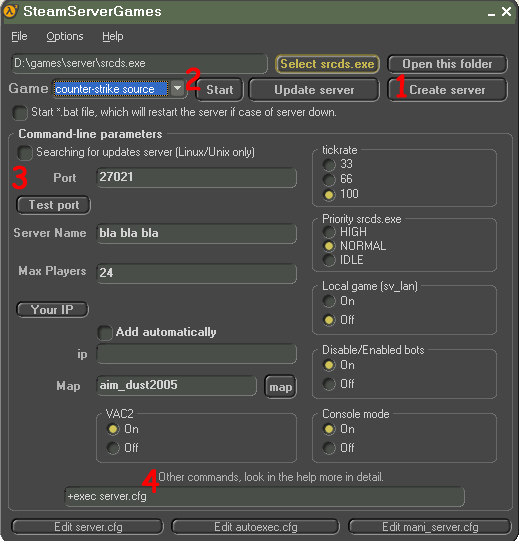

1) Creating
Go to "Create a server." We choose the path of a new server (CAUTION: In the way the new server should not be gaps, otherwise the program will give an error) Wait for the start of downloading files, should open up the black box. In the folder that you have chosen will be installed folder server in the future there will be your server.
2) Starting the server
We choose a path that files srcds.exe(for cs 1.6 hlds.exe) folder on your server, choose a game and Hit "Start" but! you first need to specify the parameters of the launch.
3) Launch Options
In the input box write without additional characters, enter ip adress not necessarily if you have 1 network. (if "could't allocate dedicated server UPD port" no enter ip)
(4 additional field) in this field commands are entered in accordance with the type of command to start the srcds.exe, if you have not experienced user, it is best not to edit this line. Below are some adittional commands and their description.
- dev - Show developer messages.
- debug - Debug Mode.
- verify_all - Will check that each file in the install matches the latest Steam version.
+ hostport <port> - Specifies the host port (Port specification before-port was added, but can still be used).
+ clientport <port> - Specifies the client port (The port the server advertises to clients, the same as-port and clientport in console)